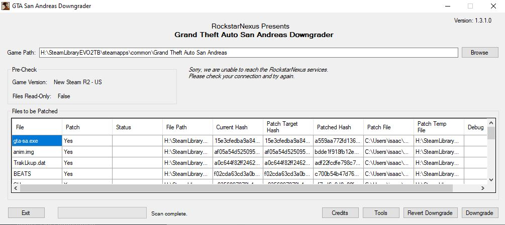

GTA San Andreas
Modding GTA San Andreas.
Modding GTA San Andreas.
First of all, you will need a clean installation of Grand Theft Auto San Andreas. Next, you need to find your install directory which you can easily do by right clicking on the game in your steam library, selecting Properties -> LOCAL FILES -> BROWSE LOCAL FILES.
Before we start modding the game you need to downgrade your copy of San Andreas to 1.0
(The current Steam version is 3.0) Why do you need to do this? Rockstar disabled most
modding capabilities in versions after 1.0 due to the Hot Coffee controversy
(Look it up if you don't know what im talking about.) and therefore in order to be
able to mod the game it must be downgraded.
To downgrade your game, simply download this handy downgrader that will do the heavy
lifting for you (Ignore any errors relating to not being able to connect):
https://services.rockstarnexus.com/sadowngrade/SADowngrade_1-3-1_Full.exe (522 MB)
MAKE SURE TO RUN THIS AS ADMINISTRATOR.
Once you've opened the program you should see a window pop up that looks like this:

If everything in the window looks correct, click the "Downgrade" button.
The program will now ask you if you want to place your downgraded version in a
separate directory than that of the Steam version in order to avoid conflicts
with future updates from Rockstar as well as a platform to downgrade the game again
without needing to re install from Steam. After you've clicked Yes or No to that,
wait for the program to finish downgrading. After a while the bottom left corner
will say that the Downgrade has finished!
After you have downgraded your game, you may want to install some other
fixes/mods that make the experience much better. A few of these are listed below
and are pretty much essential as the 1.0 release is.... well... the unpatched build
of the game, so it has a lot of bugs, many of them game-breaking. Make sure to read
the install instructions carefully before dropping stuff into your game files.
1. ASI Loader
Allows you to load ASI mods, pretty much required by every other enhancement on this list.
Link to the tool
2. SilentPatch REQUIRED FOR MOUSE INPUT TO WORK!!!
A comprehensive patch that aims to eliminate most of the bugs found in San Andreas and even fixes some framerate related issues. This mod is a must for anyone looking to play smoothly without extra hitches.
Link to the tool